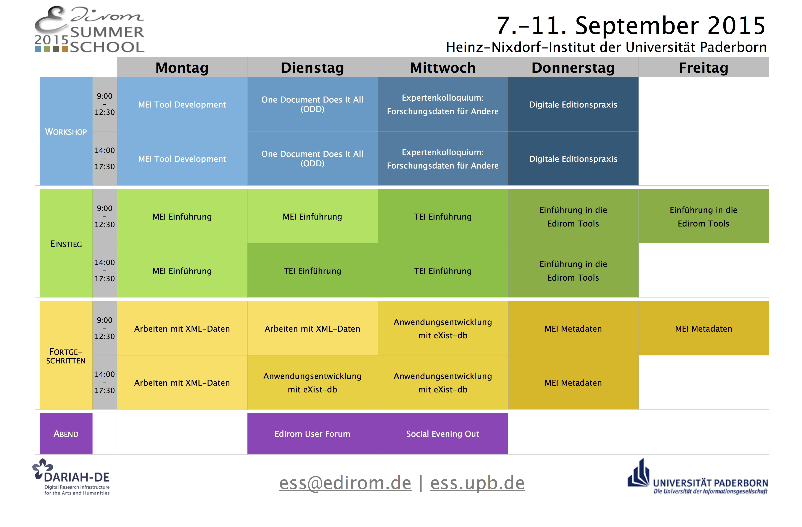

Details zu den Kursen sind ab Mai 2015 hier einsehbar.
Die Anmeldung ist ab 1. Juli 2015 möglich.

In diesem Jahr teilen sich die angebotenen Kurse in drei Schienen:
Die Schiene Einstieg bietet einführende Kurse zu den Kodierungsformaten der Music Encoding Intitiative (MEI) und der Text Encoding Initiative (TEI) sowie zu den Edirom Tools für Digitale Musikedition. Die Teilnahme setzt keine besonderen Kenntnisse voraus.
Die Kurse der Schiene Fortgeschritten richten sich an Teilnehmende, die mit XML-Technologien und MEI bereits praktisch vertraut sind. Diese Kurse bedienen technische Fragestellungen, die bei der Arbeit mit digitalen Daten in Projekt- und Forschungskontexten entstehen.
Die Workshops richten sich ebenfalls an Fortgeschrittene, aber auch an Projektverantwortliche und behandeln spezifische technische und organisatorische Fragestellungen. Hierbei soll der praktisch-diskursive Austausch im Vordergrund stehen. Weitere Informationen erhalten Sie in den entsprechenden Workshopbeschreibungen hier ab Mai 2015.